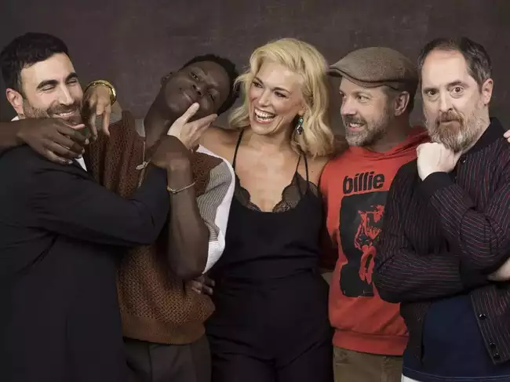

|
While John Wick shepherds Chad Stahelski (director/producer) and Keanu Reeves (star/producer) have said they always like to take their time between installments — not to mention that John Wick: Chapter 4 ended (spoiler alert) in seemingly final fashion, Lionsg ...see more |

|
Planning to kick off pre-pre-production and the casting process for his next — and still, according to him, final — film, Quentin Tarantino has revealed more about what it'll be. According to the writer/director, The Movie Critic will be based on a real person, but not as has been speculated, Pauline Kael. Instea. ...see more |
|  | 'Ted Lasso' returns Wednesday for its third season and while there are certainly questions about whether AFC Richmond will finally go all the way - or if Nate will receive his comeuppance - there's one big question: Is this actually the last season? ...see more |